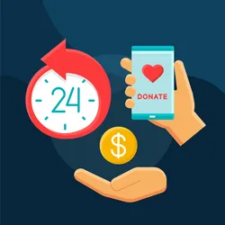
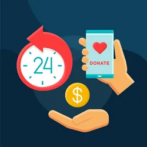

support us
support us
is built on the experience of peer support initiatives (e.g., in mental health, addiction, homelessness, for women, seniors, and Indigenous peoples) and distinguishes itself by its holistic health approach, regardless of the person's age or health conditions.
provides a bridge between health and community through the integration of peers into primary care teams. Peers are individuals with significant life experience who engage as allies in a listening, connecting, and accompanying role in attainment of the life goals set by the individual, at their own pace. The role of peers is distinct from and complementary to those of health care professionals and community workers.